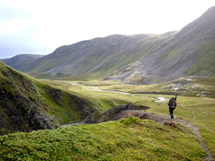
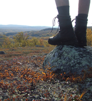
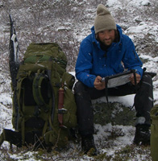
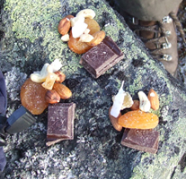
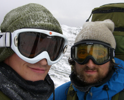
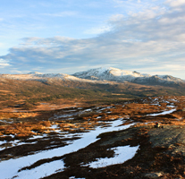

Mandag 08. September 2008 av: Montarou
De første skrittene er tatt og så er eventyret i gang. Overgangen fra å skulle gjøre det til å gjøre det, å faktisk være i gang, er som en prikk på tidslinjen; du vet ikke at du er der før du ser tilbake og finner deg selv på andre siden av det kritiske punktet.

Mandag 22. September 2008 av: Montarou
Vi går og går, toppene forsvinner bak oss og det er rart at det vi ser bak oss – et endeløst landskap så langt øyet kan se – har vi gått gjennom skritt for skritt.

Onsdag 08. Oktober 2008 av: Montarou
Det er ingen tvil. Vinteren kommer enten vi liker det eller ei. Enkelte netter ligger snøen tung på teltet, og at vannposen får et centimeters tykt lag is i løpet av natten begynner å bli vanlig.

Lørdag 25. Oktober 2008 av: Montarou
Det handler om kontraster. En uavbrutt rekke av kontraster. De gir seg oftest til kjenne gjennom behov/tilfredsstillelse eller kanskje rettere sagt ubehag/behag.

Søndag 02. November 2008 av: Montarou
Femte etappe er over og vi er like ved polarsirkelen. Det har vært en deilig uke med ekstra mat, bra vær, sympatiske dagsetapper og godt selskap.

Mandag 10. November 2008 av: Montarou
Oktober har blitt til november. Enda en måned har passert og gjort sinnet rikere og midjen smalere. Vi har blitt nødt til å flytte prosjektet sørover som tidligere antatt.